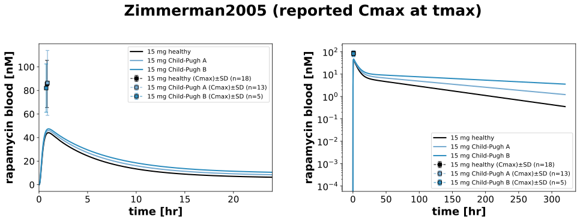
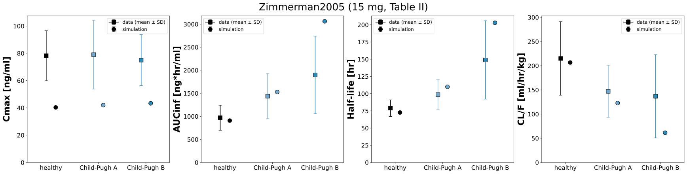

Overview
Models
| model | source |
|---|---|
| model | rapamycin_body_flat.xml |
Datasets
| dataset | file |
|---|---|
| cmax_RAP15_H | datasets/Zimmerman2005_cmax_RAP15_H.tsv |
| cmax_RAP15_A | datasets/Zimmerman2005_cmax_RAP15_A.tsv |
| cmax_RAP15_B | datasets/Zimmerman2005_cmax_RAP15_B.tsv |
Figures (2)




Code
"""Simulation experiment of the study Zimmerman2005."""
from typing import ClassVar, override
import matplotlib.pyplot as plt
import numpy as np
import pandas as pd
from sbmlsim import Q
from sbmlsim.data import DataSet
from sbmlsim.plot import Axis, Figure
from sbmlsim.plot.serialization_matplotlib import FigureMPL
from sbmlsim.simulation import Simulation
from sbmlsim.units import Quantity
from pkdb_models.models.rapamycin import MODEL
from pkdb_models.models.rapamycin.experiments.base_experiment import (
RapamycinSimulationExperiment,
)
from pkdb_models.models.rapamycin.rapamycin_pk import pk_parameters
class Zimmerman2005(RapamycinSimulationExperiment):
"""Simulation experiment of Zimmerman2005.
Subjects with hepatic impairment of Child-Pugh grade A (n=13) and B (n=5)
and 18 matched healthy controls took 15 mg of the oral solution after an
overnight fast of at least 10 h. The study reports only the
pharmacokinetic parameters of whole blood (Table II), no timecourse, so the
experiment has no fit mapping: it validates the hepatic impairment of the
model by the reported Cmax at the reported tmax in the timecourses and by
Cmax, AUC, half-life and CL/F per group. The body weight is reported only
for the controls (79.9 kg, Zimmerman2008), the groups were matched within
10 % of the weight. Child-Pugh A and B are simulated as mild and moderate
cirrhosis.
"""
groups: ClassVar[list[str]] = ["H", "A", "B"]
labels_group: ClassVar[dict[str, str]] = {
"H": "15 mg healthy",
"A": "15 mg Child-Pugh A",
"B": "15 mg Child-Pugh B",
}
cirrhosis_classes: ClassVar[dict[str, str]] = {
"H": "Control",
"A": "Mild cirrhosis",
"B": "Moderate cirrhosis",
}
colors: ClassVar[dict[str, str]] = {
group: RapamycinSimulationExperiment.cirrhosis_colors[c]
for group, c in cirrhosis_classes.items()
}
bodyweight = 79.9 # [kg]
dose = 15 # [mg]
#: the reported parameters of whole blood (Table II) and their units
pk_keys: ClassVar[dict[str, tuple[str, str, str]]] = {
# parameter: (measurement type, unit of the data, label)
"cmax": ("cmax", "ng/ml", "Cmax"),
"auc": ("auc_inf", "ng*hr/ml", "AUCinf"),
"thalf": ("thalf", "hr", "Half-life"),
"clf": ("oral-clearance", "ml/hr/kg", "CL/F"),
}
def pk_table(self) -> pd.DataFrame:
"""Get the parameters of whole blood of Table II, a row per group and parameter."""
df = self.load_dataframe("Tab2")
df = df[df.tissue == "blood"].copy()
df["group"] = df.intervention.str.removeprefix("RAP15_")
return df
@override
def datasets(self) -> dict[str, DataSet]:
# the reported Cmax at the reported tmax, the reference of the timecourses
df = self.pk_table()
dsets = {}
for group in self.groups:
df_group = df[df.group == group].set_index("measurement_type")
df_cmax = pd.DataFrame(
{
"time": [df_group.loc["tmax", "mean"]],
"time_unit": [df_group.loc["tmax", "unit"]],
"mean": [df_group.loc["cmax", "mean"]],
"sd": [df_group.loc["cmax", "sd"]],
"unit": [df_group.loc["cmax", "unit"]],
"count": [df_group.loc["cmax", "count"]],
}
)
dset = DataSet.from_df(df_cmax, self.ureg)
dset.unit_conversion("mean", 1 / self.Mr.rap)
dsets[f"cmax_RAP15_{group}"] = dset
return dsets
@override
def simulations(self) -> dict[str, Simulation]:
simulations = {}
for group in self.groups:
simulations[f"rap_RAP15_{group}"] = Simulation(
time_unit="hr",
end=320,
# every 6 min, the absorption peak is within the first hour
preinit_changes={
**self.default_changes(),
# physiological changes
"BW": Q(self.bodyweight, "kg"),
# dose
"PODOSE_rap": Q(self.dose, "mg"),
# fasted
"GU__fed": Q(self.fasting_map["fasted"], "dimensionless"),
# hepatic impairment
"f_cirrhosis": Q(
self.cirrhosis_map[self.cirrhosis_classes[group]],
"dimensionless",
),
},
)
return simulations
@override
def figures(self) -> dict[str, Figure]:
fig = Figure(
experiment=self,
sid="Tab2",
num_cols=2,
name=f"{self.__class__.__name__} (reported Cmax at tmax)",
)
plots = fig.create_plots(
xaxis=Axis(self.label_time, unit=self.unit_time), legend=True
)
# the absorption and the peak (linear), the whole timecourse (log)
plots[0].set_xaxis(self.label_time, unit=self.unit_time, min=0, max=24)
for k, scale in enumerate(["linear", "log"]):
plots[k].set_yaxis(self.label_rap_blood, unit=self.unit_rap, scale=scale)
for plot in plots:
for group in self.groups:
# simulation
plot.add_data(
task=f"task_rap_RAP15_{group}",
xid="time",
yid="[Cveblood_rap]",
label=self.labels_group[group],
color=self.colors[group],
)
# data
plot.add_data(
dataset=f"cmax_RAP15_{group}",
xid="time",
yid="mean",
yid_sd="mean_sd",
count="count",
label=f"{self.labels_group[group]} (Cmax)",
color=self.colors[group],
)
return self.figures_by_sid(fig)
@override
def figures_mpl(self) -> dict[str, FigureMPL]:
return self._figure_mpl_pharmacokinetics()
def _simulated_pk(self, group: str) -> dict[str, np.ndarray]:
"""Get the simulated parameters of whole blood of a group in the units of the data.
Returns:
The parameters per draw of the fitted parameters in a run over them
(`uncertainty`), one value without draws.
"""
res = self.results[f"task_rap_RAP15_{group}"]
# a row per draw, one row without draws
pk = pk_parameters(self, res, substance="rap")
def quantity(key: str) -> Quantity:
return Q(pk[key].to_numpy(dtype=float), str(pk[f"{key}_unit"].iloc[0]))
return {
"cmax": (quantity("cmax") * self.Mr.rap).to("ng/ml").magnitude,
"auc": (quantity("auc_inf_obs") * self.Mr.rap).to("ng*hr/ml").magnitude,
"thalf": quantity("thalf").to("hr").magnitude,
"clf": (quantity("cl_f") / Q(self.bodyweight, "kg"))
.to("ml/hr/kg")
.magnitude,
}
def _figure_mpl_pharmacokinetics(self) -> dict[str, FigureMPL]:
"""Compare the simulated and the reported parameters per group."""
df = self.pk_table()
simulated = {group: self._simulated_pk(group) for group in self.groups}
f, axes = plt.subplots(
nrows=1,
ncols=len(self.pk_keys),
figsize=(6 * len(self.pk_keys), 6),
dpi=150,
layout="constrained",
)
x = np.arange(len(self.groups))
for ax, (key, (measurement, unit, label)) in zip(
axes, self.pk_keys.items(), strict=True
):
df_key = df[df.measurement_type == measurement].set_index("group")
for k, group in enumerate(self.groups):
ax.errorbar(
x=k - 0.1,
y=df_key.loc[group, "mean"],
yerr=df_key.loc[group, "sd"],
color=self.colors[group],
marker="s",
markersize=10,
markeredgecolor="black",
capsize=4,
label="data (mean ± SD)" if k == 0 else None,
)
sim = simulated[group][key]
median = float(np.median(sim))
low, high = (
np.quantile(sim, self.uncertainty.quantiles)
if self.uncertainty is not None
else (median, median)
)
ax.errorbar(
x=k + 0.1,
y=median,
yerr=[[median - low], [high - median]],
color=self.colors[group],
marker="o",
markersize=10,
markeredgecolor="black",
capsize=4,
linestyle="none",
label="simulation" if k == 0 else None,
)
ax.set_xticks(
x, [self.labels_group[g].removeprefix("15 mg ") for g in self.groups]
)
ax.set_ylabel(f"{label} [{unit}]", fontdict=self.font)
ax.set_ylim(bottom=0)
ax.tick_params(labelsize=self.tick_font_size)
ax.set_xlim(-0.5, len(self.groups) - 0.5)
ax.legend(fontsize=self.legend_font_size + 3)
f.suptitle(
f"{self.__class__.__name__} (15 mg, Table II)",
fontsize=self.suptitle_font_size,
)
return {"Tab2_pk": f}
if __name__ == "__main__":
MODEL.run_experiments(Zimmerman2005, output_dir=Zimmerman2005.__name__)